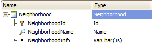
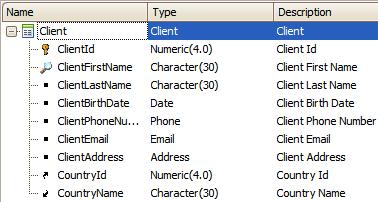

Composite examples
This document shows examples of Composite command. Example 1This example shows how GeneXus automatically creates the Delete system event for the Neighborhood transaction. 
Event 'Delete'
Composite
WorkWithDevicesNeighborhood.Neighborhood.Detail.Delete(NeighborhoodId)
Return
EndComposite
EndEvent
When the user clicks on the Delete button, the Neighborhood transaction’s WorkWithDevicesNeighborhood makes the call to the Delete function it has associated with it. If for whatever reason, the deletion is not successful, the Return function that follows will not be executed (that is to say, it won’t return to the List) and the control will remain in the View. Example 2For this example, we want to perform an action that updates the Email of a Client and then sends an SMS to that client if the action is successful.  1. We will create a Procedure. It is going to receive a &ClientId and &ClientEMail by parameter and then is going to update the email (and to return &messages of the standard Messages domain):
For each
where ClientId = &ClientId
ClientEMail = &ClientEmail
when duplicate
&Message.Type = MessageTypes.Error
&Message.Description = "Email duplicated" + str(&ClientId)
&Messages.Add(&Message)
return
EndFor
The ClientEmail is a candidate key (unique), and this procedure has to update it. If another Email has the same value, there is an error; then, it is reported in the Messages variable because "when duplicate" is an exception, and Composite only checks for exceptions. 2. Applying Work With for Smart Devices Pattern to the Client transaction. Let's add the actions: a. Add a new action by right-clicking and selecting Insert Action. We will call it CheckEMail. b. Next, we set the button’s caption with CheckEMail. c. Our procedure receives by parameter &ClientId and &ClientEMail. 3. The first part of our goal is done, so now we will code our user event. Using a context menu we select Go To Event and write this code:
Event 'UpdateEmail'
Composite
UpdateEMail.Call(ClientId,&ClientEmail,&messages)
Interop.SendMessage("Your Email has been updated successfully in my database",ClientMobilePhone)
EndComposite
EndEvent
As you can see, we have opened a code block called Composite command. The code included in it will be executed in sequence, like a composition. The first instruction makes the call to the created Procedure and then we invoke Interop to send a notification to the device. See HowTo: Using SendMessage from Interop in Smart Devices for more information. If an error had occurred in the call to the UpdateEmail procedure, the control wouldn’t move forward to Interop and would return as if the Exit command had been executed instead. Also, it would continue to do so if there were a larger sequence of actions. Writing:
Composite
UpdateEMail.Call(ClientId,&ClientEmail,&Messages)
Interop.SendMessage("Your Email has been updated successfully in my database",ClientMobilePhone)
EndComposite
...is equivalent to:
UpdateEMail.Call(ClientId,&ClientEmail,&Messages)
For &message in &messages
If &message.Type = MessageTypes.Error
msg(&message.Description)
Exit
else
Interop.SendMessage("Your Email has been updated successfully in my database",ClientMobilePhone)
Exit
EndIf
EndFor
Important note: It’s important to remember that, when calling a Procedure, the &Messages variable doesn’t have to be specifically mentioned. However, in the procedure it has to be declared as OUTPUT and its name has to be exactly "Messages". Parm(parm1, parm2, …parmn, Out:&Messages); Batch operationsAs usual, calls to a Business Component in batch mode within the Composite command are made with a variable based on the Business Components, such as an update:
Composite
&Cliente.Load(5)
&Cliente.Name = "Wayne, Bruce"
&Cliente.Save()
EndComposite
Videos |

| Backlinks | |
| Calling objects from Menu Events | |
| Composite command | Work With and Panel for Smart Devices tabs |